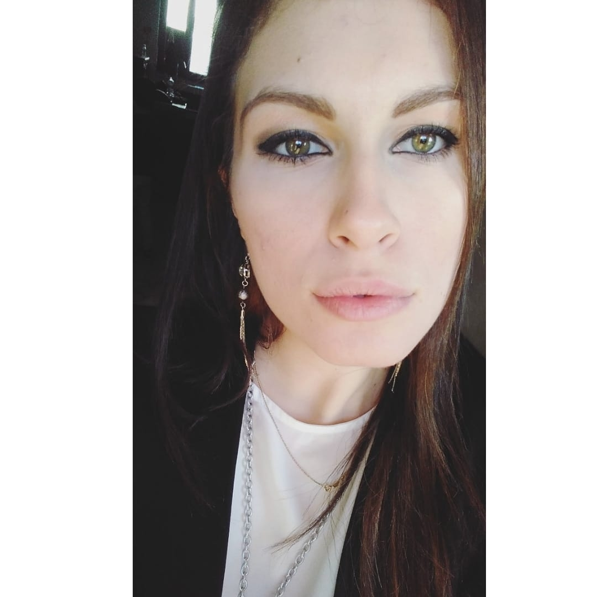

SICILY FOOD
Siamo tre ragazzi con la passione per il cibo e l'amore per la nostra terra. Questo sito è finalizzato alla vendita di prodotti del territorio da far conoscere in tutto il mondo per dimostrare la qualità del prodotto chilometro zero. Buona visione!!!

CONTATTI
Numero:333333333
e-mail: Sicilyfood@.....it